Clarity first
We cut the noise until the point is obvious.
Solo-led creative marketing studio
The Good Bit Studio helps thoughtful brands, founders, creatives, researchers, and small teams get clear on what they are trying to say, then turn it into strategy, copy, content, and creative work people actually understand.
Small by design. Flexible when useful. Just sharper ideas, better content, and a clearer reason for people to care.
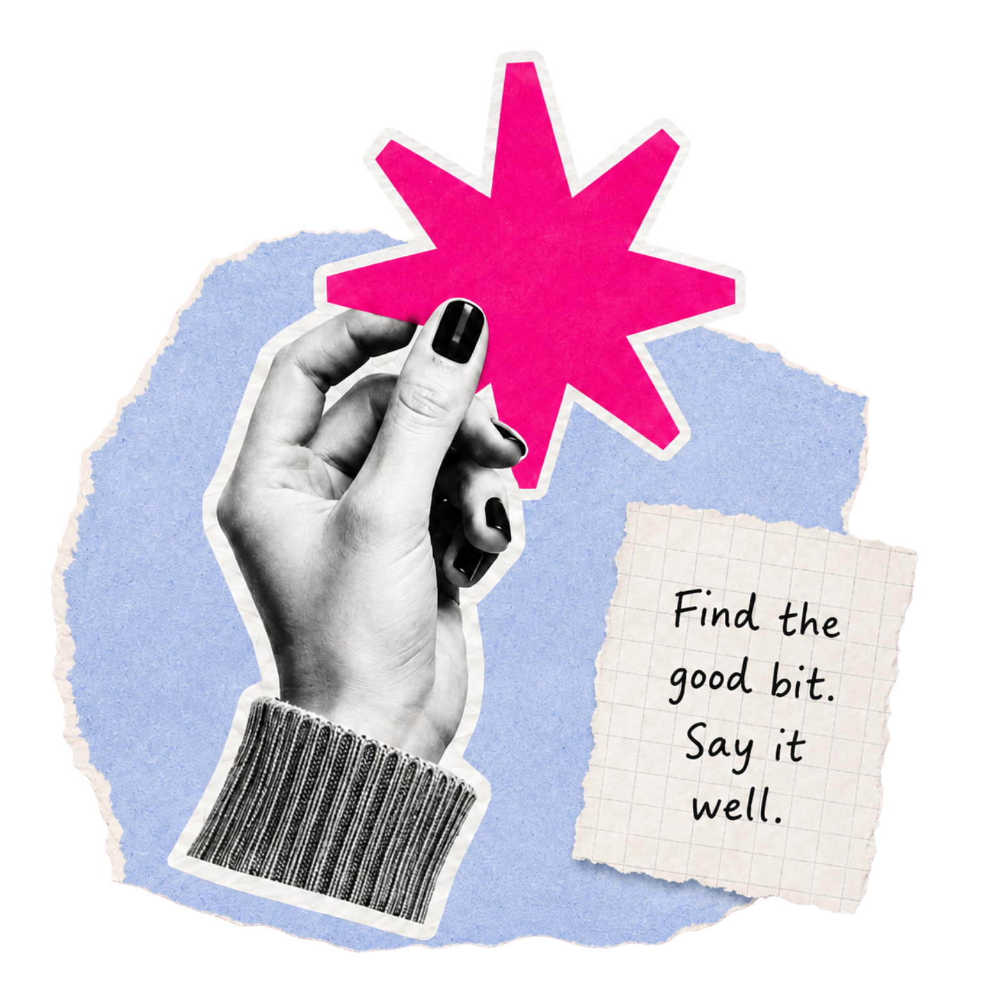
Get clear on who you are, what you stand for, and why anyone should care.
→Words that do something. Stories that stick. Ideas that don't read like a content calendar.
→Websites and digital experiences built to be useful first, beautiful second — and usually both.
→Content that builds something over time. Less viral moment, more lasting presence.
→Our promise
Most brands do not need more noise. They need a clearer point.
The Good Bit helps you find the strongest part of what you are trying to say, then build around it with strategy, copy, content, and creative direction that feels useful, human, and true to you.
We cut the noise until the point is obvious.
Strategy with a brain. Copy with a pulse.
No panic posting. No content treadmill.
Work that still makes sense six months from now.
What we do
The Good Bit works where ideas meet effective communication. That might mean sharpening your positioning, finding your brand voice, writing content, planning a social presence, shaping a campaign, or helping your team explain complex work without sounding boring (you can't afford that in this economy). The offer is simple: clearer thinking, stronger direction, and communication that knows what it is trying to do.
01 / Strategy
Get clear on who you are, what you stand for, and why anyone should care. (The fun bit, honestly.)
See my work02 / Copywriting
Words that do something. Stories that stick. Ideas that don't read like they were written by a content calendar.
See my work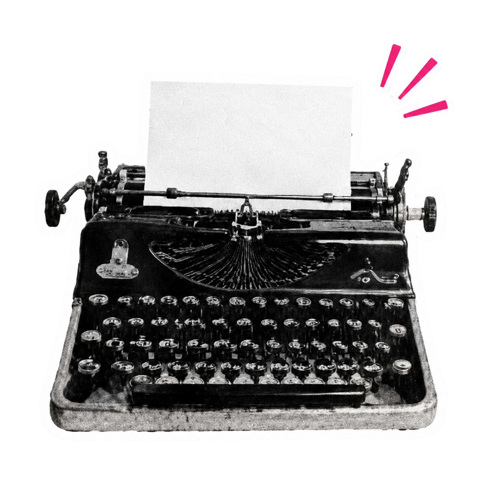
03 / Web Design
Websites and digital experiences built to be useful first, beautiful second — and usually both.
See my work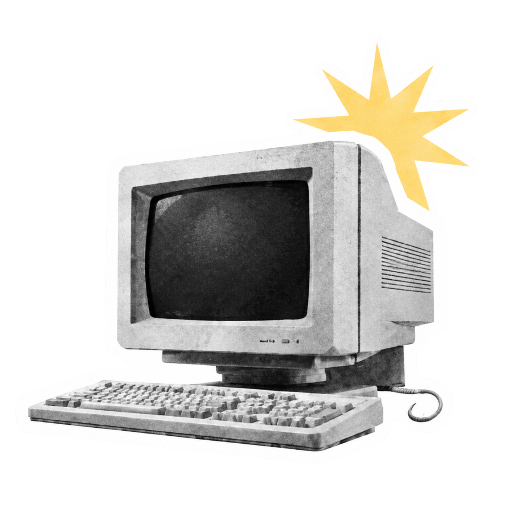
04 / Social Media
Content that builds something over time. Less viral moment, more lasting presence.
See my work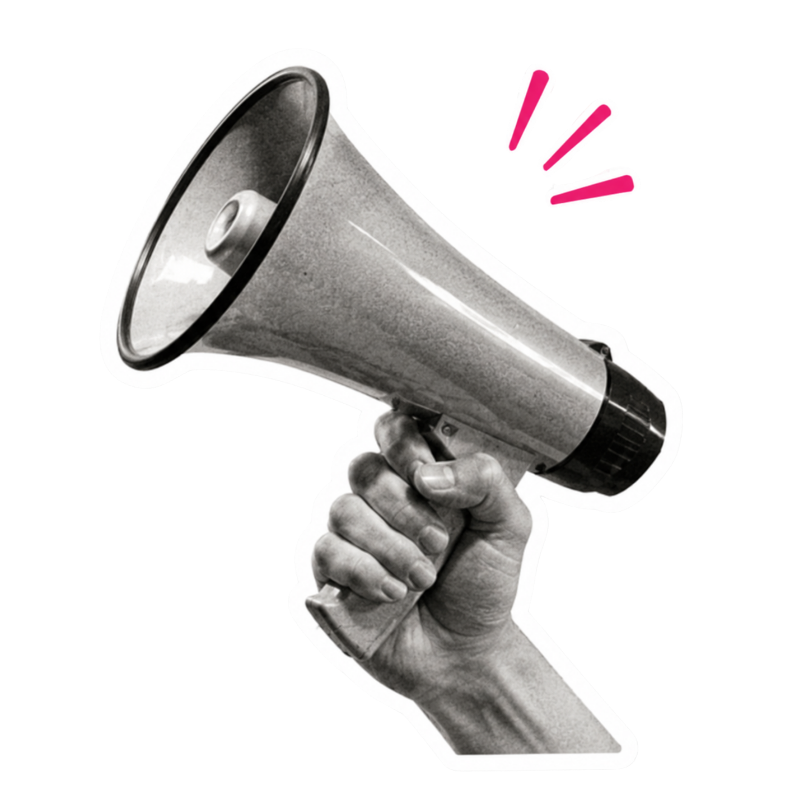
Process
Good communication usually starts before the writing. It starts with figuring out what you actually do, who it is for, why it matters, and what people need to understand before they care. That is the work. The words come after.
We ask the useful questions. Sometimes annoying ones. What are you really trying to say? What is getting buried? What does your audience already understand — and what do they keep missing?
This part takes longer than people expect. That's the point.Strategy, messaging, copy, content, creative direction — whatever shape the project needs. Built around the good bit: the idea at the center of your work that everything else grows from.
Ideas with direction.We refine it until it feels right. The goal is not to make you sound bigger, louder, or more polished than you are. The goal is to make you sound clear, credible, and unmistakably yourself.
Built to make impact.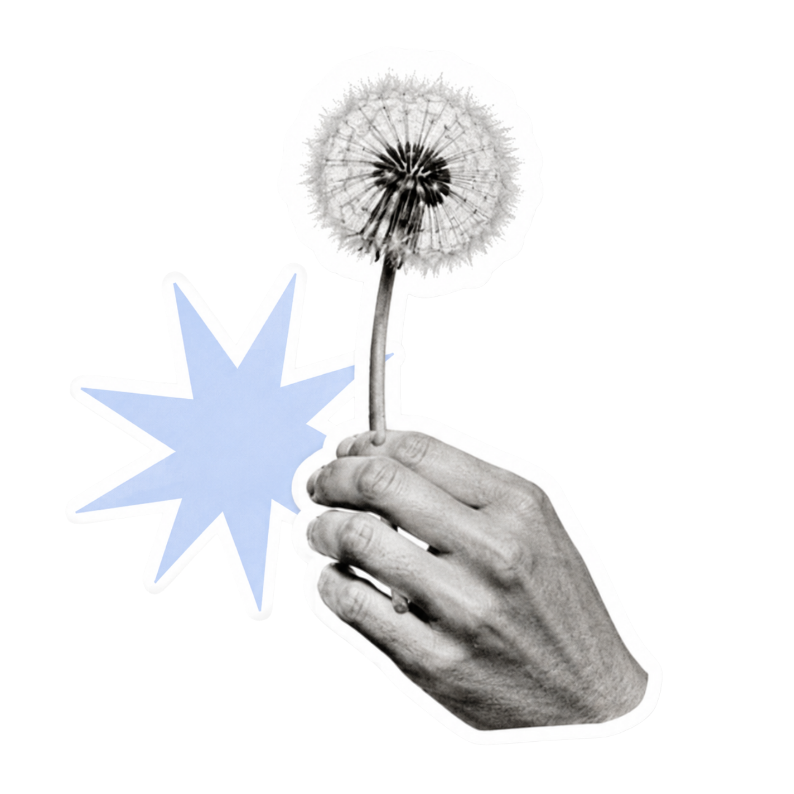
Ways to work together
Every project has a different shape, but the starting point is usually one of three things: you need clarity, you need content, or you need ongoing support. I keep scopes clear, deliverables useful, and timelines realistic. No strange asterisks. No surprise fees.
Not sure what you need yet? That is normal. That is what the discovery call is for.
For a specific thing you need to get right. A strategy session, a content plan, two core deliverables. Good for testing the water.
£1,500 One-off projectFor brands ready to build consistently. Everything in Starter, plus ongoing content, a landing page or site, and someone who actually picks up the phone.
£3,000 Per monthYour situation doesn't fit a package. Fine — neither does ours. Tell us what you're trying to do and we'll figure out the right shape together.
Custom Tailored to youWork & Experience
The Good Bit Studio is new. Cam is not. Before starting the studio, I spent years working across communications, content, SEO, social media, editorial strategy, and digital projects for organizations in science, technology, sustainability, media, culture, and creative industries.
Some projects were direct client work. Others were created in collaboration with studios, agencies, freelancers, or wider internal teams. Each work card explains the role clearly, because the details matter.
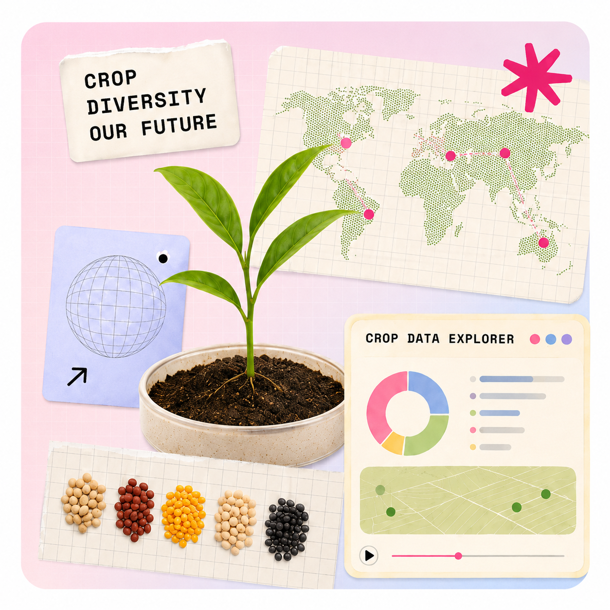
A unified digital platform improving access to crop data for food security worldwide.
11 genebanks. 650,000+ crop samples. One unified story. We built the digital strategy, IA, and editorial voice for the world's largest crop diversity network.
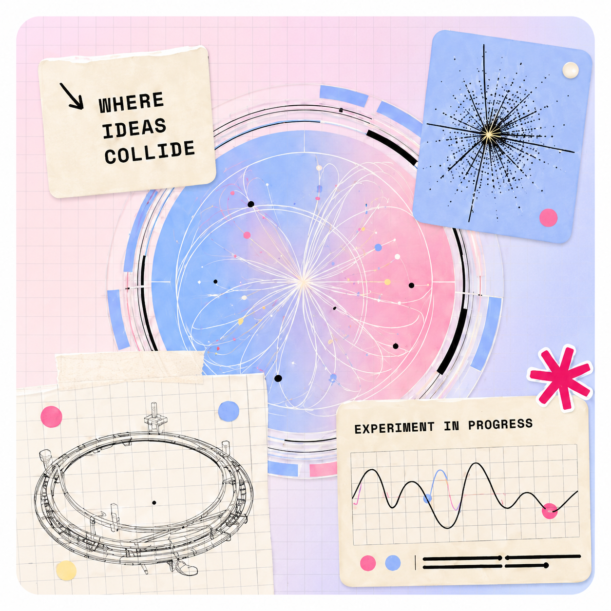
A global campaign making particle physics curious, clear, and seriously cool.
Particle physics is one of science's best stories — it just needed a better narrator. We built the campaign strategy, brand narrative, and social content for CERN's innovation hub.
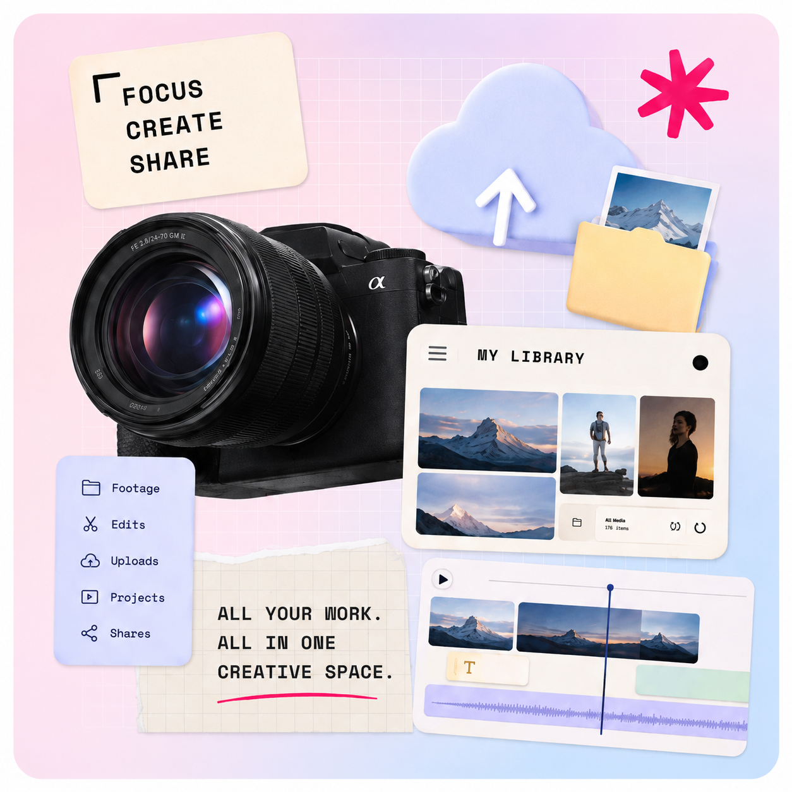
A content management platform built for creators, by creators.
Professional creatives needed more than software — they needed a platform that spoke their language. We wrote the product story, onboarding, and editorial voice end-to-end.

Positioning and campaign for the next era of immersive exploration.
Entering immersive XR markets is hard. We built the positioning, campaign narrative, and brand voice for PICO's global consumer launch into Western markets.

Brand story and social content for an artisan Italian food brand with something real to say.
Real ingredients, real story. We built BABBO's brand voice, social content, and campaign platform around what genuinely makes them good — Tuscany, craft, and no compromise.
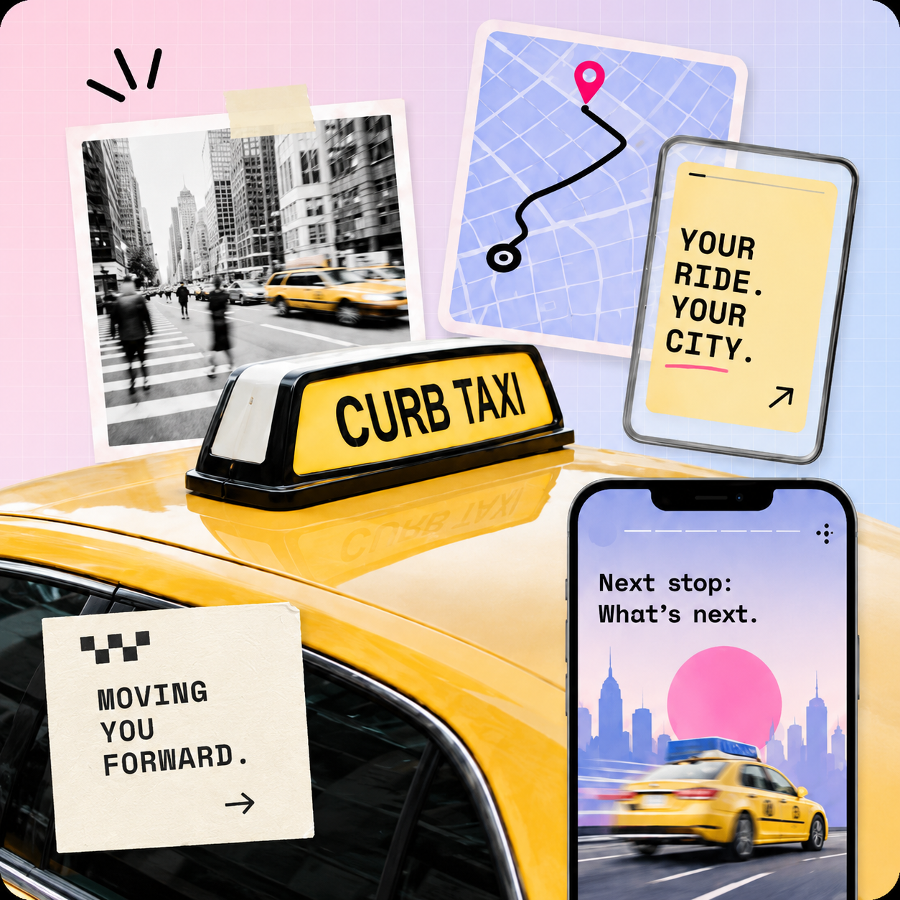
Punchy street-level visuals and social-first creative for a moving brand.
Street-level content that stops people mid-commute. We built the DOOH display content and social creative for Curb’s urban presence — visuals that move, literally.
A product website built to convert curious visitors into loyal users.
A deep-tech startup that needed to talk to humans. We designed and wrote their product site — clear, confident, and impossible to misunderstand.
A year-round social presence built around community, not content for content’s sake.
A sustainable brand with an audience that cared deeply — but a social presence that didn't match. We built a year of content that felt like them, not the algorithm.
About The Good Bit
I started The Good Bit because most communication problems are actually clarity problems.
When you're clear on who you are, what you stand for, and what you want to say, saying it well becomes a lot easier. That's where I come in: finding the good bit. The idea at the center of your work that has a pulse, and is genuinely worth sharing.
I'm an interdisciplinary creative with a background across writing, strategy, photography, music, and digital communication. From there, I help shape everything else: brand voice, messaging, content, and digital presence — not by being louder, but by being clearer.

Quick facts
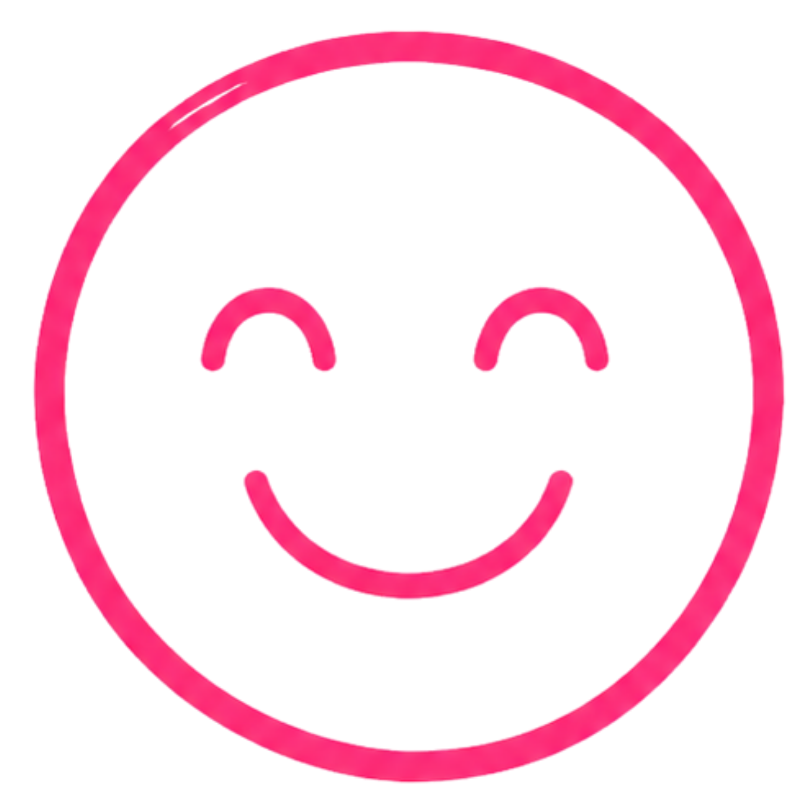
Helping bold ideas find their voice.
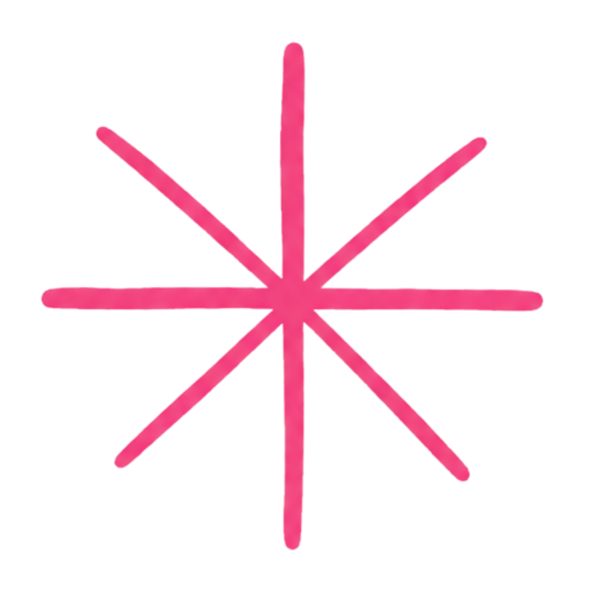
Delivered across startups, scaleups, and global teams.
English, Italian, French, Spanish, Dutch.
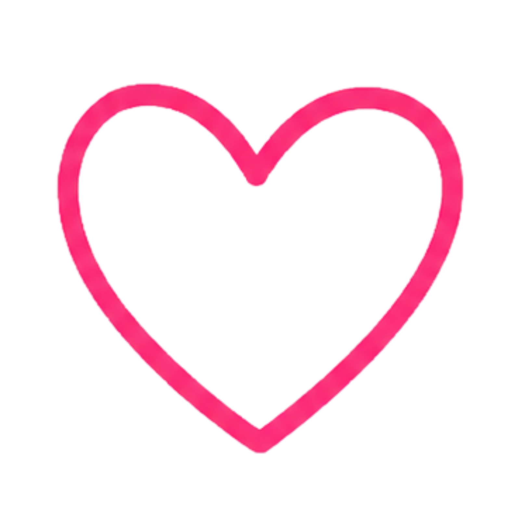
Strategy-led, creativity-driven, always people-first.
Kind words
Cam gets it. Fast. The work is smart, strategic, and actually sounds like us: just better.
Maya Lee Founder, ClearPeakWorking with Cam is like having a creative partner who's equal parts brain and gut.
Jordan Pierce COO, TallyFrom positioning to copy to campaigns, The Good Bit helped us grow with clarity and voice.
Riley Chen Head of Growth, LoopFAQ
Straight answers. No fog machine.